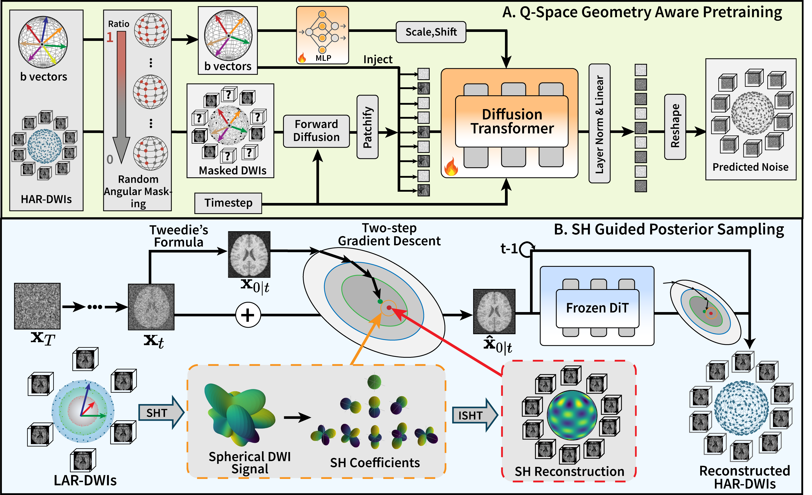
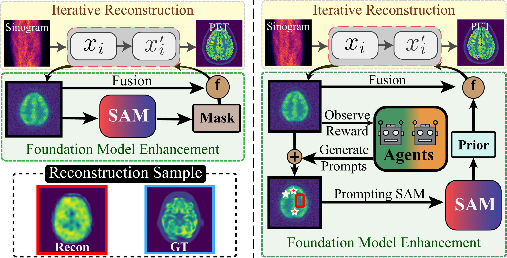
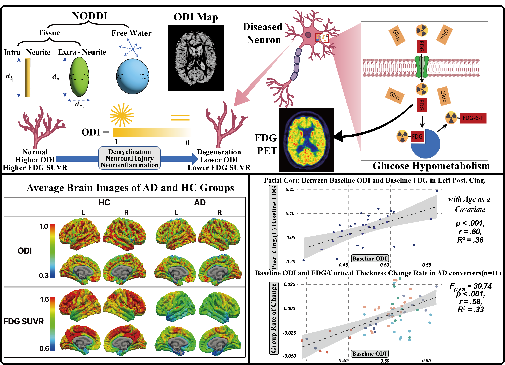

|
Mu Nan I am Mu Nan, a first-year PhD student in cognitive psychology at the University of Hong Kong, jointly supervised by Prof. Andrew Luo and Prof. Yizhou Yu. Before starting my PhD, I worked as a research assistant in medical imaging at the Chinese Academy of Sciences, advised by Prof. Shanshan Wang. Prior to that, I completed an MSc in Neuroimaging at the University of Manchester, supervised by Dr. Stephen Carter and Dr. Rainer Hinz, and a BEng in Electrical Engineering and Automation at the Huazhong University of Science and Technology. Originally trained in electrical engineering, I moved into cognitive science to develop computational methods for further understanding of human cognition and brain, focusing mainly on brain encoding/decoding and brain–machine interface. |
{kind=link}
News
|
Research |

|
Meta-Learning an In-Context Transformer Model of Human Higher Visual Cortex
Muquan Yu, Mu Nan, Hossein Adeli, Jacob S. Prince, John A. Pyles, Leila Wehbe, Margaret M. Henderson, Michael J. Tarr, Andrew F. Luo NeurIPS, 2025 |
|  |
Physics-Guided Diffusion Transformer with Spherical Harmonic Posterior Sampling
for High-Fidelity Angular Super-Resolution in Diffusion MRI
Mu Nan, Taohui Xiao, Ruoyou Wu, Shoujun Yu, Ye Li, Hairong Zheng, Shanshan Wang IEEE Transactions on Medical Imaging (in revision) |

|
Angular Super-Resolution in Diffusion MRI Using an Autoregressive Diffusion Transformer
Mu Nan, Wenxin Fan, Juan Zou, Ruoyou Wu, Ye Li, Hairong Zheng, Shanshan Wang ISMRM Diffusion MRI 2025 Oral Presentation |
|  |
Prompt-Agent-Driven Integration of Foundation Model Priors for Low-Count PET Reconstruction
Xingyu Xie, Wenjie Zhao, Mu Nan, Zheng Zhang, Yaping Wu, Hairong Zheng, Dong Liang IEEE Transactions on Medical Imaging, 2025 |
|  |
Cortical Microstructural Complexity as a Predictor of Glucose Hypometabolism
in Late-Onset Alzheimer’s Disease
Mu Nan*, Rahul Kothekar*, Jose M. Anton Rodriguez, Karl Herholz, Rainer Hinz, Stephen F. Carter Human Brain Mapping (in revision) *Equal contribution |